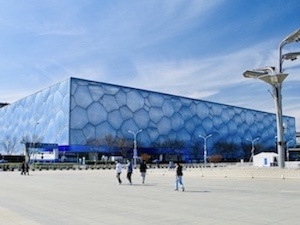

Find out more about Beijing's food and landmarks here!
Introduction
Beijing is the capital of the People's Republic of China. It is also an ancient capital with a history of more than 3,000 years. In ancient times, it was called Yanjing and Peiping. With a population of more than 21 million, Beijing is the most densely populated city in China. Therefore, traffic jams are the norm, and public transportation, such as subways and buses, is also unimaginably crowded. However, this does not stop people from all over the country and even the world from coming to Beijing. The reason is that Beijing has its unique advantages and charm, whether it is to travel or to live and work.
Cuisine to taste
Beijing has everything you want in this city! There are palace dishes from the imperial city, various cuisines gathered from different places, private dishes that have entertained leaders of various countries, and all kinds of street snacks that have been passed down for a long time. These are just six of my favorite foods from a personal perspective. Contact me to learn more!
Places to visit
Tiananmen Square, is located in the center of the capital of the People's Republic of China in Beijing, the southern tip of the imperial palace, tiananmen square and the people's heroes monument, chairman MAO memorial hall, the great hall of the people, the national museum of China on the other side of the chang an avenue, covers an area of 4800 square meters, with outstanding architectural art and special political status as the world attention.
On October 1, 1949, New China held a grand founding ceremony. Mao Zedong led the leaders of the party, the government, the army, the democratic parties and mass organizations to the Tian 'anmen Rostro and declared the founding of the People's Republic of China to the whole world.
The main activity here is to watch the flag-raising ceremony at sunrise on the 1st of each month.
{kind=link}
The Palace Museum in Beijing, formerly known as the Forbidden City, is the imperial palace of Ming and Qing Dynasties in China. It is located at the center of the central axis of Beijing. The Palace Museum in Beijing is centered on three main halls, covering an area of about 720,000 square meters, with a construction area of about 150,000 square meters. There are more than 70 palaces, large and small, and more than 9,000 houses.
The Palace Museum in Beijing is one of the largest and best preserved ancient wooden structures in the world. It is a national AAAAA tourist attraction and was listed as one of the first batch of national key cultural relic protection units in 1961. It was listed as a world cultural heritage in 1987.
The red walls and green tiles of the Imperial Palace are one of the most distinctive scenery. Nowadays, most people visit and take photos in the Forbidden City.
{kind=link}
 The National Stadium (The Bird's Nest), the main stadium of the 2008 Beijing Olympic Games, covers an area of 20.4 hectares with a floor area of 258,000 square meters and can accommodate 91,000 spectators. The opening and closing ceremonies of the Olympic and Paralympic Games were held, as well as athletics and football finals. Many stars held concerts here after the Olympic Games. It has also become a professional place for Beijing citizens to participate in sports activities. Therefore, it has become a landmark sports building and an Olympic legacy. The National Aquatics Center (The Water Cube) is responsible for swimming, diving, synchronized swimming, water polo and other competitions. After the competition, it will become an internationally advanced center for swimming, sports, fitness and leisure.
{kind=link}
{kind=link}
Tsinghua University and Peking University are the two best universities in China. Every Chinese has a life question when they are young: whether to go to Peking University or Tsinghua University. Coincidentally, my junior high school is the High School Affiliated to Tsinghua University, and my senior high school is the High School Affiliated to Peking University. Tsinghua University, formerly known as Tsinghua Xuetang, was founded in 1911 to promote academic exchanges and cooperation, draw on the strengths of others, and become an important academic center connecting the academic community of China and abroad. Peking University was founded in 1898 during the Reform, and was originally known as the Capital University. It is the first national comprehensive university in modern China, and also the highest educational administrative organ of the country at the very beginning. Peking University was the center of the New Culture Movement and the origin of the May Fourth Movement. It was the first university to spread Marxism, scientific and democratic ideas in China, and was one of the important bases for the founding of the Communist Party of China.
{kind=link}
{kind=link}